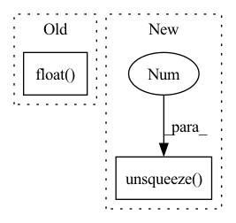

Pattern ID :547

Before Change
k = self.w_ks(mel_encoding)
v = self.w_vs(mel_encoding)
src_mask = src_mask.float().unsqueeze(-1) // [batch, seq_len, 1]
mel_mask = mel_mask.float().unsqueeze(-1) // [batch, mel_len, 1]
attn_mask = torch.bmm(src_mask, mel_mask.transpose(-2, -1)).bool() // [batch, seq_len, mel_len]
After Change
src_len, mel_len = src_mask.shape[1], mel_mask.shape[1]
src_mask_ = src_mask.unsqueeze(-1).expand(-1, -1, mel_len) // [batch, seq_len, mel_len]
mel_mask_ = mel_mask.unsqueeze(1).expand(-1, src_len, -1) // [batch, seq_len, mel_len]
output, attn = self.attention(q, k, v, src_mask=src_mask_, mel_mask=mel_mask_)
In pattern: SUPERPATTERN
Frequency: 3
Non-data size: 2
Instances
Fragment ID: 1956045
Project Name: keonlee9420/parallel-tacotron2
Commit Name: 1f98efe5d09778b2b77e291aff63ef6e497c6bb9
Time: 2021-07-26
Author: 1531820402@qq.com
File Name: model/blocks.py
M Class Name: VariableLengthAttention
N Class Name: VariableLengthAttention
M Method Name: forward(5)
N Method Name: forward(5)
M Parent Class: nn.Module
N Parent Class: nn.Module
M File Name: model/blocks.py
N File Name: model/blocks.py
M Start Line: 271
M End Line: 273
N Start Line: 271
N End Line: 273
'>
Before Change
mel_loss = mse_loss(mel, mel_target, mel_length)
mel_postnet_loss = mse_loss(mel_postnet, mel_target, mel_length)
d_loss = mae_loss(d_predicted, d_target.float(), src_length)
p_loss = mae_loss(p_predicted, p_target, mel_length)
e_loss = mae_loss(e_predicted, e_target, mel_length)
After Change
e_target = e_target.masked_select(mel_mask)
mel = mel.masked_select(mel_mask.unsqueeze(-1))
mel_postnet = mel_postnet.masked_select(mel_mask.unsqueeze(-1))
mel_target = mel_target.masked_select(mel_mask.unsqueeze(-1))
mel_loss = self.mse_loss(mel, mel_target)
'>
Fragment ID: 1956044
Project Name: ga642381/fastspeech2
Commit Name: 923df091801799fdc6c5cf5172068676474e6f4f
Time: 2020-07-24
Author: r08922080@ntu.edu.tw
File Name: loss.py
M Class Name: FastSpeech2Loss
N Class Name: FastSpeech2Loss
M Method Name: forward(12)
N Method Name: forward(12)
M Parent Class: nn.Module
N Parent Class: nn.Module
M File Name: loss.py
N File Name: loss.py
M Start Line: 33
M End Line: 38
N Start Line: 19
N End Line: 35
'>
Before Change
// variable_ = self.linear_sensor(variable.float().unsqueeze(1)).squeeze(1)
Nonlinear transformation // AUROC ~0.8
values_ = F.relu(self.linear_value(values.float().unsqueeze(1))).squeeze(1)
// variable_ = F.relu(self.linear_sensor(variable.float().unsqueeze(1))).squeeze(1)
unit = torch.cat([pe_, values_, variable_], dim=1)
After Change
pe_ = self.pos_encoder(time_points.unsqueeze(1)).squeeze(1)
variable = nonzero_index[:,1] // the dimensions of variables. The m value in SEFT paper.
unit = torch.cat([pe_, values.unsqueeze(1), variable.unsqueeze(1)], dim=1)
// // positional encoding AUROC ~0.86 Why positional encoding works?
// // values_ = self.pos_encoder_value(values.unsqueeze(1)).squeeze(1)
'>
Fragment ID: 1956048
Project Name: mims-harvard/raindrop
Commit Name: 0b0a19b4ba53c4a1303ef507483e994acffac9b8
Time: 2021-09-09
Author: xiang.alan.zhang@gmail.com
File Name: code/baselines/models.py
M Class Name: SEFT
N Class Name: SEFT
M Method Name: forward(5)
N Method Name: forward(5)
M Parent Class: nn.Module
N Parent Class: nn.Module
M File Name: code/baselines/models.py
N File Name: code/baselines/models.py
M Start Line: 304
M End Line: 327
N Start Line: 311
N End Line: 318